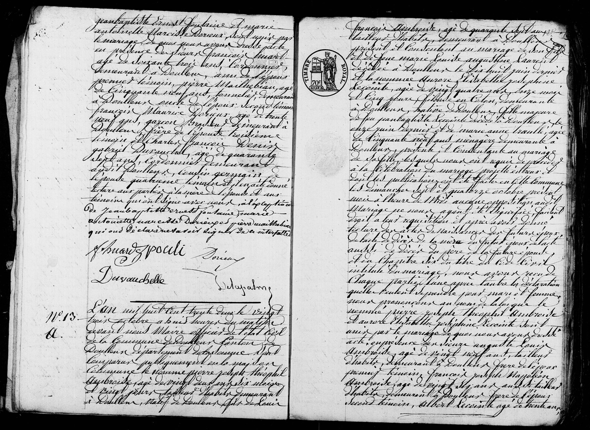
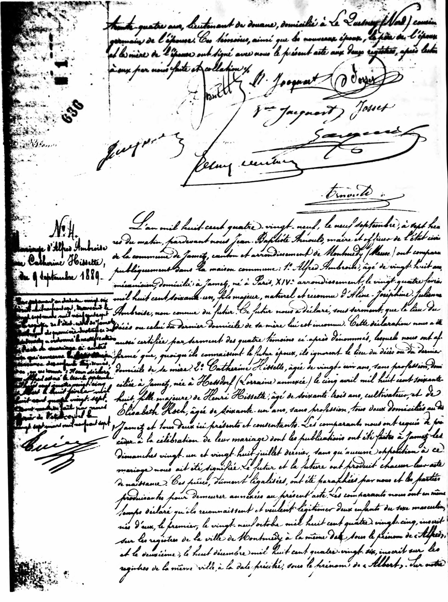
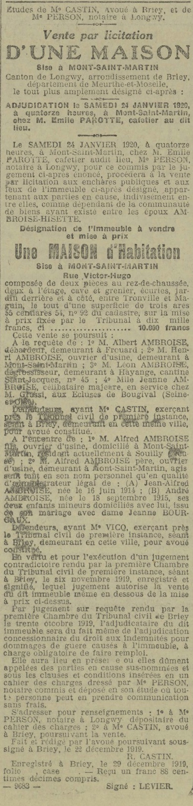
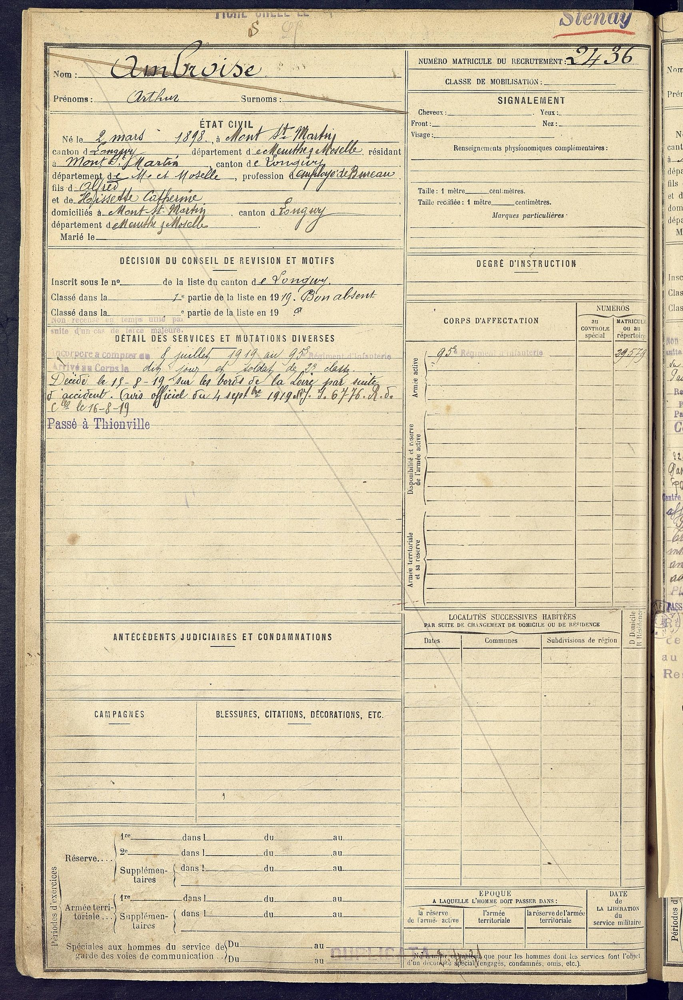
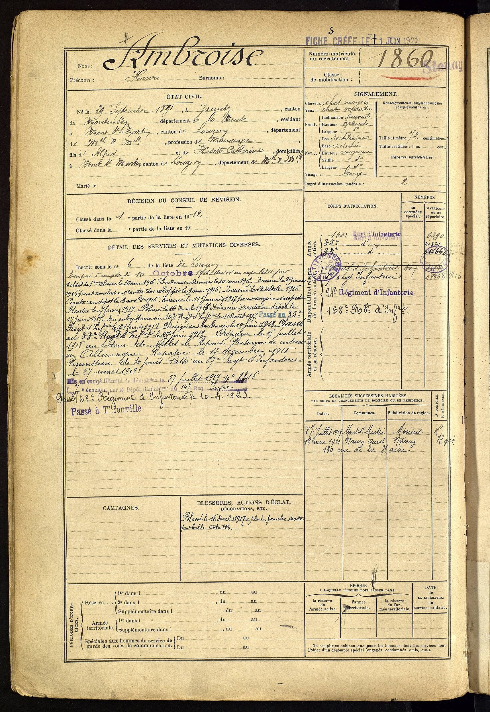
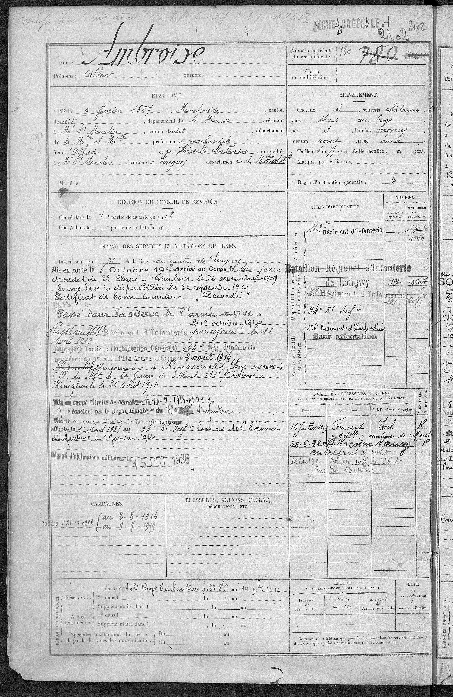
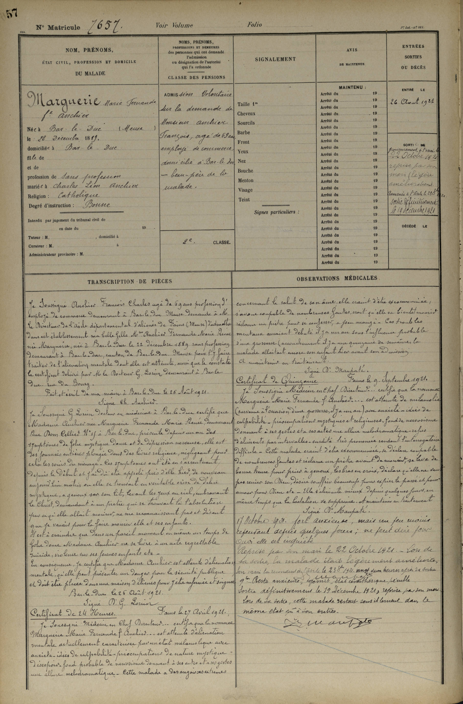
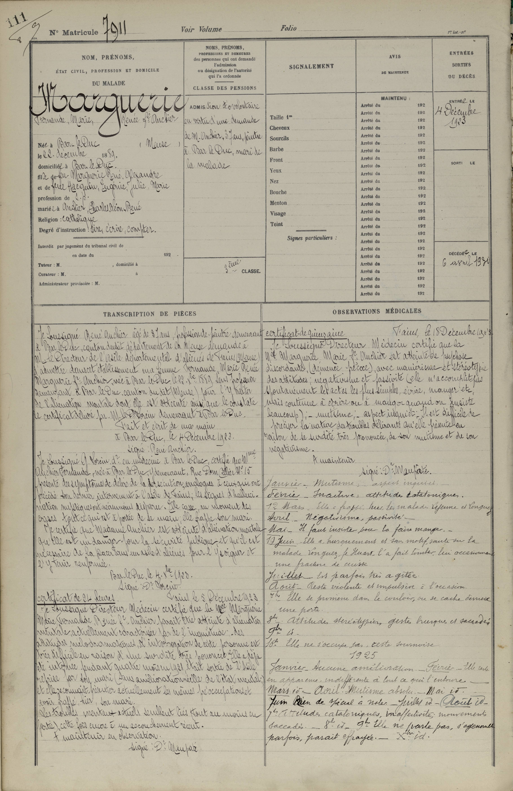

7 Documents et transcriptions
7.1 Méthode
J’ai utilisé Geneanet pour retrouver des documents essentiels explicitant les dates de naissance, décès et mariage — tout en m’appuyant sur des arbres d’autres chercheurs. En combinant ces deux approches (interrogation de sources primaires et consultation d’arbres collaboratifs), j’ai progressivement tissé un fil solide pour la reconstitution de notre arbre familial.
Les parties les plus fiables reposent sur des actes officiels issus de Geneanet, tandis que les générations précédant 1800 restent plus sujettes à caution, faute de documents — j’ai alors parfois extrapolé à partir d’arbres plus anciens, réalisés par des passionnés ayant mené des recherches approfondies.
Cette méthode hybride suit en partie les préceptes du Genealogical Proof Standard (recherche exhaustive, citations précises, croisement des sources), même si, pour l’Ancien Régime1, la fiabilité varie en fonction des arbres consultés.
7.2 Mariage Ambroise Lecointe (1832)
L’an 1832, le 23 octobre à huit heures du matin. Devant nous Maire affilés de l’état civil de la commune de Doullens canton de Doullens, département de la Somme, sont comparus publiquement en la maison commune le nommé Pierre Joseph Théophile Ambroise, agé de 22 ans 6 mois et 20 jours, tailleur d’habits demeurant à Doullens, natif de Doullens, fils de Louis François Ambroise, agé de 47 ans, tailleur d’habits, demeurant à Doullens, présent et consentant au mariage de son fils, et de feue Marie Louise Augustine Laurent décédé à Doullens le 18 juin dernier et la nommée Aurore Elisabeth Joséphine Lecointe agée de 24 ans, 11 mois et 5 jours, fileuse en coton, demeurant à Doullens, native de Doullens fille majeur de feu Jean Baptise Lecointe décédé à Doullens le 11 juin dernier et marie à Marie Anne Troullé agée de 59 ans, ménagère demeurant à Doullens présente et consentante au mariage de sa fille, lesquels nous ont requis de procéder à la célébration du mariage projetté entre eux et dont les publications ont été faites en cette commune les dimanche 7 et 14 octobre précédent seoir à l’heure de midi sans qu’il nous ait été signifié aucune opposition audit mariage.
Faisant droit à leur réquisition, après avoir donné lecture de l’acte de naissance des futurs époux, de l’acte de décés de la mère du future époux de l’acte de décés du père de la future épouse, et du chapitre VI du titre du Code civil Napoléon intitulé Du Mariage, nous avons reçu de chaque partie l’une après l’autre la déclaration qu’elle veluent prendre pour mari et femme. Nous prononçons au nom de la loi que le nommé Pierre Joseph Théophile Ambroise et Aurore Elisabeth Jopéphine Lecointe sont unis par le mariage
De tout quoi, nous avons dressé acte en présence de Messieurs
- Auguste Louis Ambroise, âgé de 29 ans, tailleur d’habits demeurant à Doullens, frère de l’époux, premier témoin
- François Joseph Napoléon Ambroise, âgé de 26 ans, aussi tailleur d’habit demeurant à Doullens, frère de l’époux, demeurant à Doullens, second témoin.
- Albert Lecointe, âgé de 30 ans serrurier, demeurant à Doullens, frère de l’épouse, troisième témoin.
- Henri Joseph Diland, agé de 33 ans, boulanger demeurant audit Doullens, beau-frère de l’épouse, quatrième témoin
et il a été donné lecture, aux parties, au père de l’époux, à la mère de l’épouse et aux témoins, qui ont signés avec nous….
Signatures :
Ambroise — Ambroise — ….
7.3 Mariage Ambroise Hissette

L’an 1889, le 9 septembre à 7h du matin. Par devant-nous. Jean-Baptiste, Arnould, maire et officier de l’État de la commune de Jametz, canton et arrondissement de Montmédy (Meuse), ont comparu publiquement dans la maison commune : 1. Alfred AMBROISE, âgés de 28 ans, mécanicien, domicilié à Jametz, né à Paris, 14e arrondissement, le 24 février 1861, fils majeur, naturel et reconnu d’Aline, Joséphine julienne Ambroise, non connue du futur Ce futur nous a déclaré sous serment que le lieu du décès ou du dernier domicile de sa mère lui est inconnu. Cette déclaration nous a été aussi certifié par serment des quatre témoins, si, après dénommé, lesquels nous ont affirmé que, quoi qu’il connaisse, le futur époux, ils ignore le lieu du décès ou du dernier domicile de sa mère. 2. Catherine, Hissette âgé de 29 ans sans profession Celia à jamais né à Hessdorf (Lorraine annexée) le 5 avril 1860, huit, fille majeure de Henry Hissette, âgé de 63 ans, cultivateur et d’Elisabeth Koch, âgé de 61 ans, sans profession, tout deux domiciliés à Jametz, tout deux ici présent et consentant. Les comparants nous ont requis de procéder à la célébration de leur mariage dont les publications ont été faites à Jametz les dimanches 21 et 28 juillet dernier, sans qu’aucune opposition à ce Mariage nous ait été signifiée. Le futur et la future ont produit chacun leur acte de naissance. Ces pièces, dûment légalisées, produisantes pour demeurer annexées au présent acte. Les comparants nous ont en même temps déclaré qu’ils reconnaissent et veulent légitimer deux enfants du sexe, nés masculin né d’eux, le permier le 29 octobre 1885, inscrit sur les registres de la ville du Montmédy, à la même date sous le prénom de Alfred et le deuxième, le 8 décembre 1886, inscrit sous les registres de la même ville à la date, précisée sous le prénom d’Albert…
7.4 L’article de l’Est Républicain de 1920

Vente par licitation d’une maison sise à MONT-SAINT-MARTIN Canton de Longwy, arrondissement de Briey,
département de Meurthe-et-Moselle, le tout plus amplement désigné ci-après ADJUDICATION le samedi 24 janvier 1920, à quatorze heures, à Mont-Saint-Martin, chez M. Emile PAROTTE, cafetier au dit lieu.
Le samedi 24 janvier 1920, à 14 heures, à Mont-Saint Martin, une vente par licitation a eu lieu à Mont-Saint-Martin (Meurthe-et-Moselle) concernant une maison appartenant à la communauté de biens ayant existé entre Alfred Ambroise et Catherine Hissette, tous deux décédés.
Désignation de l’immeuble La maison est située rue Victor-Hugo à Mont-Saint-Martin, entre Tronville et Maguin. Elle comprend :
- deux pièces au rez-de-chaussée,
- deux pièces à l’étage,
- une cave, un grenier,
- des écuries,
- un jardin derrière et sur le côté.
Superficie cadastrée : 3 ares 55 centiares 54, Référence cadastrale : n° 92, Mise à prix : 10 000 francs
Héritiers demandeurs
- Albert Ambroise, débardeur, domicilié à Frouard
- Henri Ambroise, ouvrier d’usine, domicilié à Mont-Saint-Martin
- Léon Ambroise, dégrossisseur, domicilié à Hayange cantine St Jacques n°45
- Jeanne Ambroise, célibataire, en service chez M. Grassi aux écluses de Bougival (Seine-et-Oise)
Représentés par Me Castin, avoué à Briey.
Parties défenderesses
- Alfred Ambroise (père), ouvrier d’usine domicilié à Mont Saint Martin, résidant actuellement à Souily
- Alfred Ambroise (fils), ouvrier d’usine, demeurant à Mont Saint Martin, aggissant tant en son nom personnel qu’en qualité d’administrateur légal de:
- Jean-Alfred Ambroise, né le 16 juin 1914
- André Ambroise, né le 18 septembre 1915 ses deux enfant mineurs domiciliés avec lui, issus de son mariage avec dame Jeanne Bourgaux.
Représentés par Me Vicq, avoué à Longwy.
Jugement et conditions
Jugement du 6 novembre 1919, autorisant la vente même en dessous de la mise à prix. Jugement du 30 octobre 1919 : droit aux indemnités de guerre transféré à l’adjudicataire avec obligation de remploi. Vente chez M. Émile Parotte, cafetier à Mont-Saint-Martin , Le 24 janvier 1920 à 14 h, Cahier des charges déposé chez Me Person, notaire à Longwy
7.5 La fiche militaire d’Arthur Ambroise (1898-1919)

7.6 La fiche militaire d’Henri Ambroise (1891-)

7.7 La fiche militaire de Léon Ambroise (1890-)

7.8 La fiche militaire d’Albert Ambroise (1887-)

7.9 La fiche militaire d’Alfred Ambroise (1887-)

7.10 Internement de Fernande Marguerie 1921, 1923, 1930



Marguerie Marie Fernande épouse Anchier. Admission non volontaire sur la demande de M. Anchier-François, âgé de 69 ans, employé de commerce, domicilié à Bar-le-Duc, beau-père de la malade.
7.10.1 Lettre de Charles Anchier pour l’admission
Je sous-signé Anchier-François Charles, âgé de 69 ans, profession d’employé de commerce demeurant à Bar-le-Duc, Meuse, demande à M. le directeur de l’asile, département d’Aliéné-de-Fains, Meuse, d’admettre dans cet établissement ma belle-fille, Mme Anchier Fernande Marie René, née Marguerie, née à Bar-le-Duc, le 22 décembre 1989, sans profession, demeurant à Bar-le-Duc, canton de Bar-le-Duc, Meuse, pour y faire traiter de l’aliénation mentale dont elle est atteinte, ainsi que le constat, le certificat, délivré par M. le docteur Lorum, demeurant à Bar-le-Duc, rue du Boury, fait et écrit de ma main à Bar-le-Duc, le 26 août 1921, signé Anchier.
7.10.2 Lettre du médecin de famille (membre de la famille ?)
Je sous-signé G. Lorum, docteur en médecine à Bar-le-Duc, certifié que Mme Anchier Marguerite Fernande Marie René, demeurant rue d’Oncelier, numéro 19, à Bar-le-Duc, présente, depuis un an, des symptômes de folie mystique, douce et de dépression nerveuse. Elle est, des journées entières, plongée dans des livres religieux, négligeant pour cela les soins du ménage. Les symptômes ont été en s’accentuant, depuis le début, et j’ai dû être appelé près d’elle, hier, de nouveau, aujourd’hui matin, où elle se trouvait en véritable crise de délire mystique, à genoux, sur son lit, levant les yeux au ciel, embrassant le Christ, demandant à un fichtre qui se trouvait là, l’absolution par qu’elle allait mourir, ne me reconnaissant pas, et disant que je venais pour la faire mourir, elle et ses enfants. Il est à craindre que, dans un pareil moment, en même temps de folie douce, Mme Anchier ne se livre à un acte regrettable, suicide, violence sur ses jeunes enfants, etc. En conséquence, je certifie que Mme Anchier est atteinte d’aliénation mentale, qu’elle peut présenter un danger pour la sécurité publique, et doit être placée dans une maison d’aliénés pour être enfermée et soignée. Bar-le-Duc, le 26 août 1921. Signé le docteur G. Lorum.
7.10.3 Certificat de 24 heures, fin le 27 aout 1921.
Je sous-signé, médecin en chef, directeur, certifie que la nommée Marguerite Marie Fernande Anchier est atteinte d’aliénation mentale, actuellement caractérisée par un état mélancolique, avec anxiété, idée de culpabilité, préoccupation de nature mystique, désespoir, fond notable de névrosisme sonnant, a des actes et a des gestes d’une allure mélodramatique. Cette malade a des angoisses extrêmes concernant le salut de son âme. Elle craint d’être excommuniée. S’avoue coupable de nombreuses fautes, croit qu’elle va bientôt mourir, réclame un prêtre pour se confesser à peu manger. Ses troubles mentaux auraient débuté il y a un an, sous l’influence probable d’une grossesse. Accouchement, il y a une quinzaine de semaines, la malade allaitait encore son enfant, hier avant son maintien en traitement. Signé docteur Maupaté.
7.10.4 Certificat de quinzaine Fait le 9 septembre 1921
Je sous-signé, médecin en chef, directeur, certifie que la nommée Marguerite Marie-Fernande Anchier est atteinte de mélancolie, survenue à l’occasion d’une grossesse, il y a un an, avec anxiété, idée de culpabilité, préoccupation mystique, religieuse, fond de nervosisme, donnant à ses gestes et à ses actes une allure mélodramatique, refus d’aliments par intervalles, surdité très prononcée, rendant l’interrogation difficile. Cette malade craint d’être excommuniée, se déclare coupable de nombreuses fautes et réclame un prêtre avant de mourir, se lève de bonne heure pour prier à genoux les bras en croix, déclare qu’elle ne veut pas renier son Dieu, désire souffrir beaucoup pour expier le passé, et par amour pour Dieu. Elle s’alimente mieux depuis quelques jours en même temps que la lactation se supprime, et maintient en traitement, signé Dr Maupaté.
7.11 17 octobre 1921
forte, anxieuse, mais un peu moins, cependant, depuis quelques jours, ne peut dire de quoi elle est inquiète. Reprise en main le 22 octobre 1921, lors de la sortie, la malade était légèrement améliorée. Son mari l’a reconduit à l’asile le 23 à 20 heures après sa sortie. Reste anxieuse, gémie, état pénible. Sortie définitivement le 19 décembre 1921, reprise par son mari lors de sa sortie, cette malade restant sensiblement dans le même état qu’à son entrée.
7.11.1 Admission non volontaire en vertu d’une demande de M. Anchier, 37 ans, peintre à Bar-le-Duc, mari de la malade, le 4 décembre 1923
Je sous-signé Anchier, René, âgé de 37 ans, profession peintre demeurant à Bar-le-Duc, canton du dit département de la Meuse, demande à M. le directeur de l’asile départemental d’Aliéné de fin Meuse, d’admettre dans cet établissement ma femme, Fernande, Marie-René Marguerite, femme Anchier, née à Bar-le-Duc, le 22 décembre 1889, sans profession, demeurant à Bar-le-Duc, canton du dit Meuse, pour y traiter de l’aliénation mentale dont elle est atteinte, ainsi que le constate, le certificat, de M. le docteur Lorum, demeurant à Bar-le-Duc, fait et écrit de ma main, à Bar-le-Duc, le 4 décembre 1923.
Signé René Anchier
7.11.2 Lettre du médecin de famille (membre de la famille ?)
Je sous-signé G. Lorum, docteur en médecine à Bar-le-Duc, certifique madame Anchier Fernande, née à Bar-le-Duc, y demeurant, rue Doncellier, numéro 15, présente des symptômes de délire de la persécution, analogue à ceux qui ont précédé son dernier internement, à l’asile de faim. Les signes d’hallucinations mystiques ont néanmoins disparu. Elle casse, au moment des crises, tout ce qui est à portée de sa main. Elle frappe son mari. Me certifie que madame Anchier est atteinte d’aliénation mentale, qu’elle est un danger pour la sécurité publique et qu’il est nécessaire de la placer dans un asile d’aliénés pour l’y soigner et l’y tenir renfermée.
Bar-le-Duc, le 4 décembre 1923 SIGNÉ DOCTEUR LORUM
7.11.3 Certificat de 24 heures Fin le 5 décembre 1923
Je sous-signé, directeur médecin, certifie que la madame Marguerite Marie-Fernande René Femme-Anchier paraît être atteinte d’aliénation mentale actuellement caractérisée par de l’inquiétude des attitudes mélodramatiques. L’interrogation de cette personne et très difficile en raison d’une surdité très prononcée. Elle a déjà été internée pendant 4 mois en 1921, était sortie de l’asile, reprise par son mari, sans amélioration réelle de l’état mental, et elle reconnait présentement les mêmes préoccupations et avoir frappé hier son mari. Les troubles mentaux actuels semblent liés tout au moins en partie, cette fois encore, à un accouchement récent.
Maintenir en observation SIGNÉ DOCTEUR MAUPATÉ
7.11.4 Certificat de quinzaine Fin le 18 décembre 1923
Je soussigné, Directeur médecin certifie que la Mme Marguerite Marie, femme Anchier, est atteinte de psychoses discordantes, démence précoces avec maniérisme et stéréotypie, des attitudes, négativisme et passivité. Elle n’accomplit pas spontanément les actes les plus simples, écrire, manger, etc., mais continue à écrire ou à manger quand on insiste beaucoup. Mutisme, Aspect inquiet, il est difficile de préciser la nature des troubles délirants qu’elle présente en raison de sa surdité très prononcée de son mutisme et de son négativisme. A maintenir Signé Docteur Maupaté
7.11.5 1924
- Janvier: mutisme, aspect inquiet,
- février: inactive, attitude catatonique,
- mars: elle a frappé hier les malades Régène et Canfray,
- avril: négativisme, passivité, mai, il faut insister pour la faire manger,
- juin : elle a brusquement, sans motif, sauté sur la malade Longuet, l’a fait tomber, lui occasionnant une fracture de cuisse,
- juillet: est parfois très agitée, août, reste violente et impulsive à l’occasion, elle se promène dans le couloir ou se cache derrière une porte,
- aout: attitude stéréotypée, geste brusque et saccadé,
- elle ne s’occupe pas, reste sournoise,
7.11.6 1925
- janvier: aucune amélioration,
- février, elle reste en apparence indifférente à tout ce qui l’entoure,
- mars: jusqu’à avril, mutisme absolu,
- mai: juin, rien de spécial à noter,
- juillet, août: attitude catatonique, inaffectivité, mouvement saccadé,
- septembre, décembre: elle ne parle pas, s’agenouille parfois paraît effrayée.
7.11.7 1926
- Janvier, est assez souvent violente, ne parle pas, ne s’occupe pas.
- Février à mars, avril, même réaction discordante.
- Mai, juin, elle a frappé hier trois autres malades.
- Juillet, très gâteuse, mouvement saccadé.
- Août, paraît souvent effrayé, gesticule.
7.11.8 1927
- Janvier, mutisme, ineffectivité, atteinte catatonique.
- Février, mars, avril, mai, pas de modification favorable.
- Juin, juillet, idem,
- août, idem.
7.11.9 1928
- Janvier, même état,
- février, idem.
- Quatrième trimestre, état démentiel, attitude stéréotypée.
7.11.10 1829
- Premier trimestre, idem,
- deuxième trimestre, grimace, tic, stéréotypée, effrayée.
- Troisième trimestre, même état,
- quatrième trimestre, idem,
7.11.11 1930
décès, le 6 août 1930.
7.12 Ficher militaire de René Anchier

7.12.1 fiche matriculaire de charles léon rené anchier
né le 6 février 1886 à bar-le-duc, dans le département de la meuse
détails des services et mutations diverses :
inscrit sous le numéro 16 de la liste
- arrivé le 8 octobre 1907 sur le 19ème régiment des bataillons de chasseurs à pied
- arrivé au corps et chasseur de deuxième classe le dix jours
- envoyé dans la disponibilité le 25 septembre 1909
- un certificat de bonne accordée
- rappelé à l’activité le 1er autre 1914
- arrivé au corps le 2 autre 1914
- Maintenu en service armé, inapte deux mois, lumbago chronique consécutif à une blessure de guerre par éclat d’obus à la fesse gauche, constaté par la Commission de réforme d’Aquitaine du 6 janvier 1916.
- Classé service auxiliaire, inapte jusqu’à contre-visite.
- Décision de la Commission de réforme de Bourg du 25 septembre 1918 : ligature dorsolombaire de nature psychonévrosique, datant d’août 1914.
- Fesse gauche touchée par éclat d’obus.
- Passé au 9ᵉ Régiment du Génie le 21 octobre 1918, sur ordre du Général commandant la 6ᵉ région, n°1488 du 20 octobre 1918.
- Envoyé en congé illimité de démobilisation le 11 mars 1919.
- Échelon : 5ᵉ par le dépôt démobilisateur du 9ᵉ Régiment du Génie.
- Se retire à Bar-le-Duc (Meuse), rue Doncellier n°15.
- Passé dans l’armée territoriale le 1ᵉʳ octobre 1920.
- Blessé le 21 octobre 1914, évacué vers les hôpitaux de l’intérieur au dépôt le 22 octobre 1914.
- Blessé le 21 aut 1914 à Aigny (Marne), balle fesse gauche (en Allemagne)
Disponibilité dans l’armée active
- Bataillon de Chassours à Pied d’ Epernay-Verdun, (du 30 aout 21 Septembre 1911)
- 9 ème régiment du génie, (à partir du 27 juillet 1914)
7.12.2 Localisations et engagements du 9ᵉ Régiment du Génie (1914–1918)
Voici quelques points mis en contexte avec l’historique du 9ᵉ Régiment du Génie, documenté dans les archives historiques : - Ce régiment fut créé en mai 1914 à Verdun, à partir de compagnies du génie existantes, et prit part à des campagnes majeures comme Verdun 1916, la Somme 1916, l’Aisne 1917 et l’Oise 1918. - Plusieurs de ses compagnies (6/3, 6/4, 6/5, etc.) ont été engagées dans des travaux de fortification, pose de barbelés, défense passive, et ont été citées à plusieurs reprises pour leurs actions lors des grandes offensives .
D’après les archives publiées et l’historique du régiment, le 9ᵉ Régiment du Génie, intervient sur plusieurs fronts majeurs :
- 1914 : engagé dès septembre dans le secteur de Rupt-en-Woëvre et Riaville (Meuse), secteurs de la bataille des frontières.
- 1915 : présence en mai à Vienne‑le‑Château (Marne), puis en septembre aux Éparges (Meuse).
- 1916 : déplacements autour de Fontaine-lès-Cappy et Arvillers (Somme), en lien avec les offensives de la Somme.
- 1917 : important déploiement dans l’Aisne (Berry‑au‑Bac, Gernicourt) et en novembre dans la région de Carspach (Haut-Rhin) — évocation possible d’un transit ou d’appui à des opérations en Lorraine .
- 1918 : en août, présence autour de Ciry‑Salsogne (Aisne), puis en novembre, en Belgique (Thielt) .
7.13 Famille Hissette 2023
La famille Hissette a produit un document de grande qualité (His(s)ette 2023), où l’on peut retrouver quelques membres de notre arbre (le père de Catherine Hissette).
Traditionnellement, l’Ancien Régime s’étend de l’accession d’Henri IV en 1589 jusqu’à la Constitution de 1791 (4 septembre 1791), qui instaure la monarchie constitutionnelle↩︎